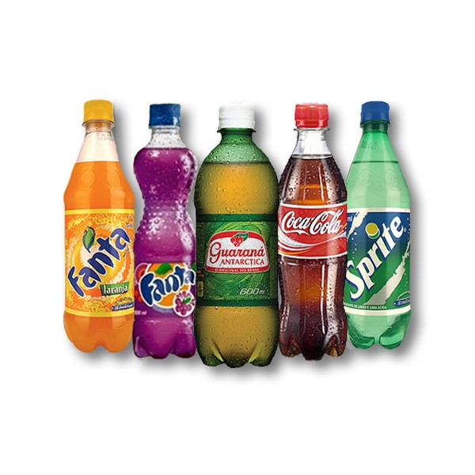

"Trabalhamos sempre tendo o amor como
ingrediente principal".
Essa frase foi dita por João Pedro Assis, fundador da panificadora que é sucesso por todo o
Brasil.
As opções que temos no nosso cardápio para satisfazê-lo são?
Frios (todos os tipos de queijos, além de diversos tipos de presunto, e outros condimentos
frios da panificadora
Bebidas (sucos naturais, refrigerantes e
drinks.)
algumas das bebidas oferecidas
Sagados (
Diversos tipos de salgados naturais feitos pelas mãos de nossas cozinheiras, como por exemplo: risólis, coxinha, esfirras, etc.)
salgados oferecidos
Doces (vários tipos de
confeitos também feitos na nossa cozinha. Como por exemplo: bolos, tortas, e várias outras opções de confeitos deliciosos para você
saborear.)
uma das delicias da nossa panificadora
Confira o nosso horário de funcionamento:
Dias
Horário de funcionamento
Segunda a Sexta feira
Das 06:00 as 18:00
Domingos
Das 07:30 as
12:00
obs: Não trabalhamos aos sábados
Obrigado por acessar o nosso
site!!! Estamos esperando você aqui na Panificadora Sonho Feliz!!!!